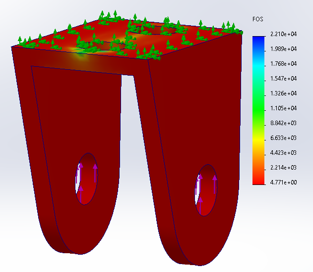
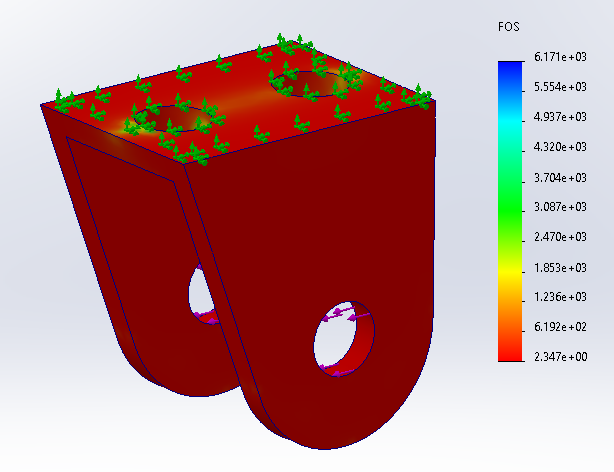

Portable Arm Lift (Senior Design) - Structural Analysis & Prototype
Designed:
A wheelchair lift arm to assist individuals in
transferring from a seated position, focusing on stability, safety,
and portability. Utilized SolidWorks finite element analysis (FEA) to
simulate real-world loading conditions, ensuring the structure could
withstand the requirements while minimizing material weight. This
project highlights my skills in assistive device engineering,
structural analysis, and design optimization to create innovative,
real-world solutions. See
here
for the YouTube video.